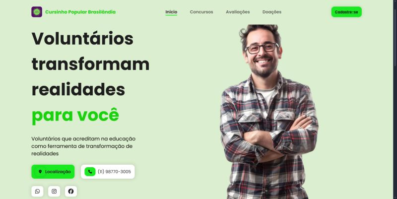
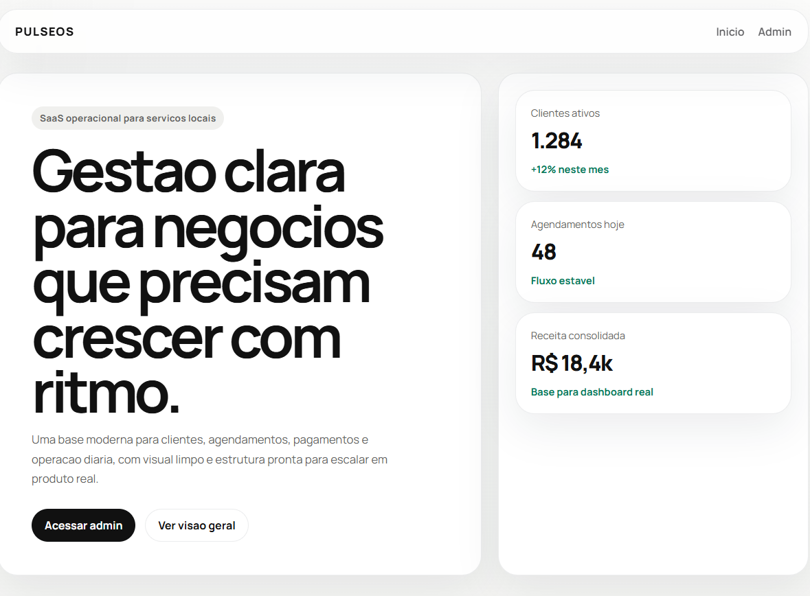
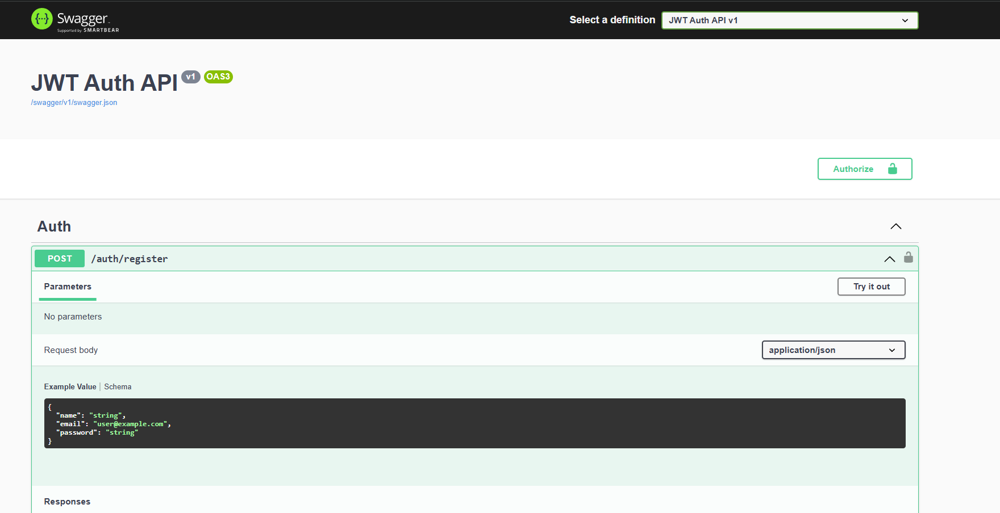
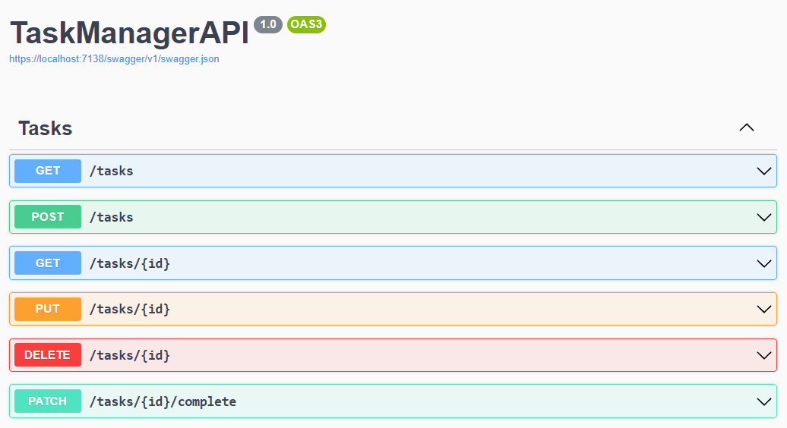
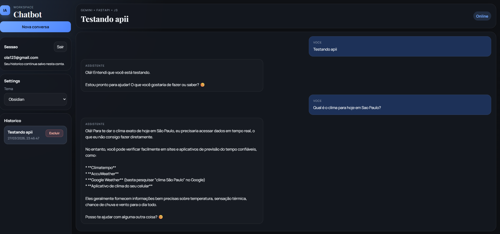
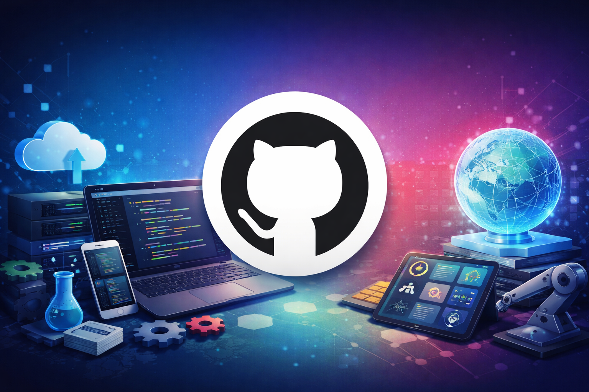

Desenvolvedor de Software com experiencia em sustentacao de aplicacoes, desenvolvimento de APIs, integracoes de sistemas e aplicacoes web. Tecnologias: Node.js, Python, C#, JavaScript, TypeScript, PostgreSQL, MySQL, MongoDB, Docker e Git.
Desenvolvedor de Software com foco em sustentação de aplicações críticas, troubleshooting avançado e integrações entre sistemas. Atuo diretamente na análise e resolução de incidentes em produção, investigando causas raiz e implementando soluções que aumentam a estabilidade e confiabilidade dos sistemas. Tenho forte experiência com APIs, integrações e evolução de aplicações web, sempre com foco em impacto real no negócio. Meu background em infraestrutura e redes me permite ter uma visão completa das aplicações, acelerando diagnósticos e tornando as soluções mais eficientes, principalmente em ambientes distribuídos. Também desenvolvo projetos práticos em Java, incluindo aplicações voltadas para automação e processamento de eventos em ambiente de jogos, utilizando Maven e Gradle.
Ver ProjetosTecnologias que fazem parte da minha rotina de desenvolvimento, APIs, banco de dados, automacao e infraestrutura.

Projeto social desenvolvido para uma ONG com foco em democratizar o acesso a cursinhos online gratuitos para vestibulandos de baixa renda. A proposta une impacto social, inclusao digital e uma estrutura web pensada para apresentar a iniciativa com clareza e credibilidade.
Ver Projeto
Base de um SaaS de gestao criada para pequenos negocios que precisam organizar clientes, agenda, pagamentos e operacao em um unico sistema. O projeto foi estruturado para evoluir como produto real, com visao comercial, modularidade e potencial de escala.
Ver Projeto
API desenvolvida em ASP.NET Core para estudo e aplicacao pratica de autenticacao com JWT. O projeto contempla cadastro, login, geracao de token e rota protegida, demonstrando dominio de seguranca, persistencia com SQLite e organizacao backend em C#.
Ver Projeto
API de gestao de tarefas criada com ASP.NET Core, Entity Framework Core e SQLite, com estrutura em camadas para facilitar manutencao e evolucao. O projeto evidencia boas praticas como uso de DTOs, servicos, repositorios e operacoes assincronas.
Ver Projeto
Aplicacao full stack inspirada no estilo ChatGPT, com backend em FastAPI, autenticacao JWT, historico de conversas em SQLite e integracao com a API Gemini. Um projeto que combina IA generativa, experiencia conversacional e desenvolvimento web completo.
Ver Projeto
Acesse meu GitHub para verificar todos os meus projetos, onde compartilho aplicacoes, estudos e experiencias praticas que demonstram minhas habilidades e evolucao no desenvolvimento.
Ver ProjetoBaixe meu curriculo para acessar um resumo objetivo da minha experiencia, principais tecnologias, projetos e atuacao profissional em desenvolvimento de software.
Baixar Curriculo